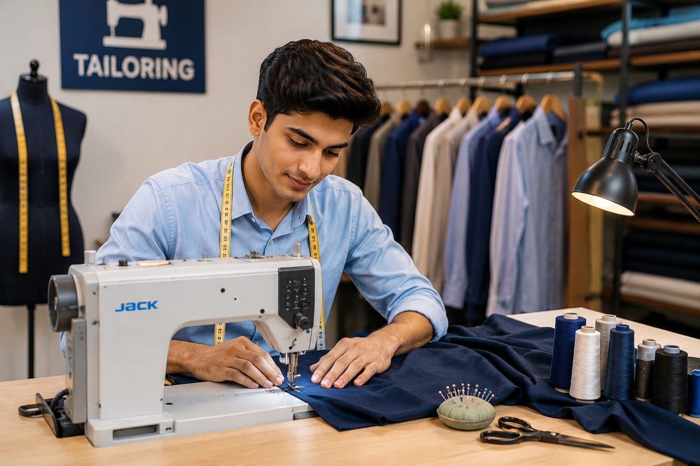

- You have your favourite dress right? It may be a pant, shirt, churidhar, or school uniform.
- Someone carefully designs, cuts, and stitches those dresses.
- That person is called a Tailor.
- 👉 In simple words: Tailors stitch, alter, and design clothes for people.
Tailor
🧑🎨 What Do They Do?

🎓 How to Become a Tailor
These tailoring and garment programs help students learn stitching, sewing machine operation, dress making, garment construction, pattern making, and fashion designing skills.
ITI in Sewing Technology (NCVT/SCVT)
Duration: 1 Year (2 Semesters)
Eligibility: 10th Pass (Certain technical branches accept 8th Pass)
Entrance Exam: State-Level ITI Merit Selection
ITI in Dress Making (NCVT/SCVT)
Duration: 1 Year (2 Semesters)
Eligibility: 10th Pass
Entrance Exam: State-Level ITI Merit Selection
Diploma in Garment Technology / Apparel Design & Fashion Technology
Duration: 3 Years
Eligibility: 10th Pass with at least 35% marks
Entrance Exam: State Polytechnic Entrance Examinations (e.g., JEECUP, MSBTE counseling)
📝 Exam Details
(Click on the exam name to see full details)
State-Level ITI Merit Selection State Polytechnic Entrance ExaminationsNote: These programs mainly focus on practical stitching, garment construction, sewing machine handling, fabric cutting, and fashion design skills.
These advanced tailoring and fashion programs help students learn garment construction, apparel design, pattern making, textile knowledge, fashion technology, and modern stitching techniques.
B.Voc (Bachelor of Vocation) in Fashion Technology & Apparel Design
Duration: 3 Years
Eligibility: 12th Pass from any stream (Arts, Commerce, or Science)
Entrance Exam: CUET UG / State Skill University Entrance Tests
Advanced Diploma in Garment Construction and Commercial Pattern Making
Duration: 1 Year
Eligibility: 12th Pass or ITI pass in Sewing/Dress Making
Entrance Exam: Merit-based Admission using 12th or vocational board marks
📝 Exam Details
(Click on the exam name to see full details)
CUET UG State Skill University Entrance TestsNote: These programs mainly focus on fashion technology, garment production, commercial stitching, apparel designing, and practical tailoring skills.
These certification programs help students learn practical tailoring skills, stitching, pattern making, sewing machine handling, and modern garment designing techniques.
Self Employed Tailor / Assistant Designer Certification (NSQF Level 3/4)
Duration: 3 – 4 Months (Approx. 350–400 Hours)
Eligibility: 8th or 10th Pass
Provider: National Skill Development Corporation (NSDC) / Apparel Made-ups & Home Furnishing Sector Skill Council (AMHSSC)
Certificate in Computer-Aided Pattern Making (CAD)
Duration: 1 – 2 Months
Eligibility: 10+2 Pass or ITI/Diploma holders
Provider: CADD Centre Training Services / Specialized Fashion CAD Training Hubs
Note: These certification courses mainly focus on practical tailoring skills, garment construction, stitching techniques, and fashion industry training.
Note:
(Age limits, marks, and admission process may vary depending on the college or state. These courses are available in many colleges and universities across India. You can choose colleges based on your location, budget, and entrance exams.)
🏛️ Top Colleges & Institutes for Tailoring & Fashion Design in India
(Tap on a college to view details)
After 10th (ITI & Skill Training)
Government Industrial Training Institute (ITI) for Women, Pusa (New Delhi) Government Industrial Training Institute (ITI), Aundh (Pune) Government Polytechnic, Mumbai Government Girls Polytechnic, LucknowAfter 12th (Fashion Design & Garment Programs)
Fergusson College, Pune Carmel College, Mala (Thrissur, Kerala) Biyani Group of Colleges, Jaipur Heights Institute / Kalinga University Partner CentersSTEP 1
Imagine you are working as a Tailor.
STEP 2
A customer wants a new dress for a special function and approaches you.
STEP 3
You take the body measurements carefully and help choose the design and cloth.
STEP 4
You start cutting the fabric and stitching the dress using a sewing machine.
STEP 5
After a few days, you complete the dress and it fits the customer perfectly.
STEP 6
If designing and stitching clothes excites you, this career may suit you.
🏠
Tailor Shops
Stitch clothes like shirts, pants, churidhars, blouses, and uniforms for customers.
🏬
Boutiques
Design and create stylish custom dresses and fashion wear.
👗
Fashion Design Studios
Work with designers to stitch and prepare fashionable garments.
🏭
Garment Factories
Stitch clothes in large quantities using industrial sewing machines.
🎓
School Uniform Centers
Stitch uniforms for schools, colleges, and institutions.
🪡
Alteration Services
Adjust and repair clothes to fit customers properly.
💻
Online Clothing Businesses
Create and sell stitched dresses through social media and online stores.
✈️
Abroad Opportunities
Work in fashion industries, garment companies, and tailoring businesses in different countries.
(Click Yes or No for each question)
1. Do you like stitching dresses or clothes?
2. Have you ever thought about stitching your own dress, shirt, or school uniform?
3. Have you ever thought about how dresses are designed and stitched?
4. When you see a beautiful dress, have you ever thought, “How did they stitch this dress so beautifully?”
5. Imagine a customer asks you to stitch a beautiful dress for a special function. You take the measurements, choose the design, stitch the dress carefully, and the customer feels happy wearing it. Does this excite you?